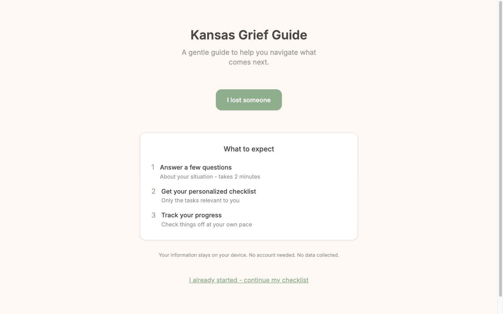
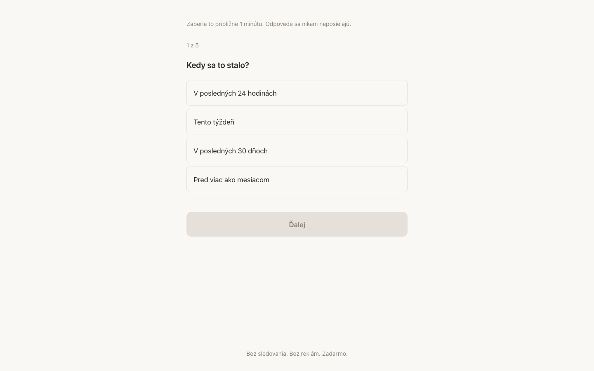
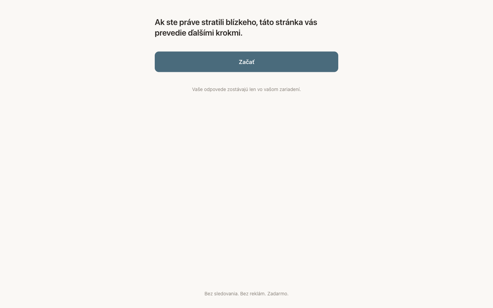

2026 · Shipped · Two builds
Grief Guides
Two versions of the same idea, one for Kansas and one for Slovakia: you answer a handful of questions after losing someone, and you get a checklist of only the tasks that actually apply to you. The hardest design brief in this collection, because the user is not in a state to be sold anything.

Designing for someone who is not okay
- One decision per screen. The landing page offers exactly one action. The wizard asks one question at a time, five in total, with the count shown.
- Say the cost before the ask. "Takes 2 minutes." "1 of 5." Nobody in this state should be surprised by how long something will take.
- Privacy stated in plain words. Answers stay on the device — no account, no tracking, no data collected. Written where it's read, not buried in a policy.
- Nothing urgent-looking. No red, no timers, no badges. Warm cream, sage green, generous spacing, and type large enough to read through tears.
- A way back in. "I already started — continue my checklist," because this is not a single sitting.

Two builds, not one translation
The tasks after a death are legal and administrative, so they diverge completely between jurisdictions — the Slovak version is not the Kansas version in another language. The Slovak build is also the plainer of the two: no card, no illustration, just the sentence, the button, and the promise that answers go nowhere.

Palette
#8fae8b sage
#c4a484 tan
#fdf8f3 cream
#e8e0d8 linen